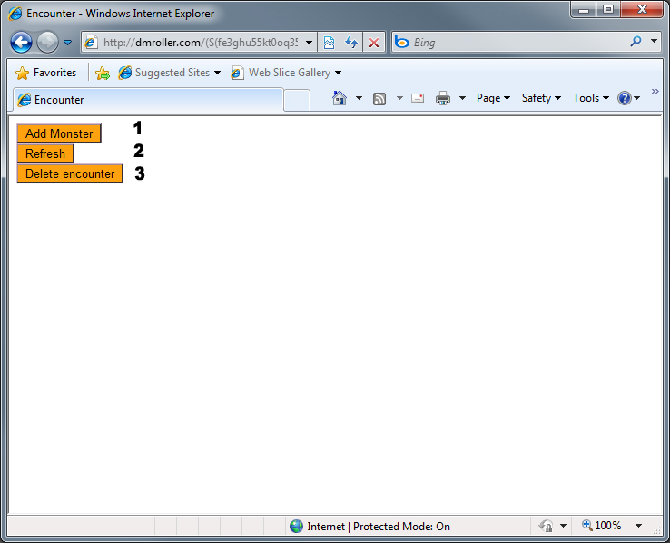
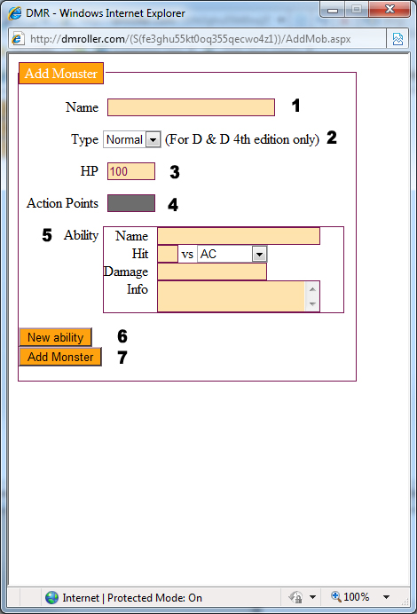
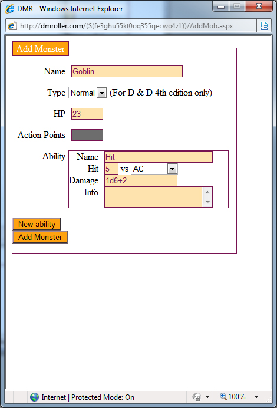
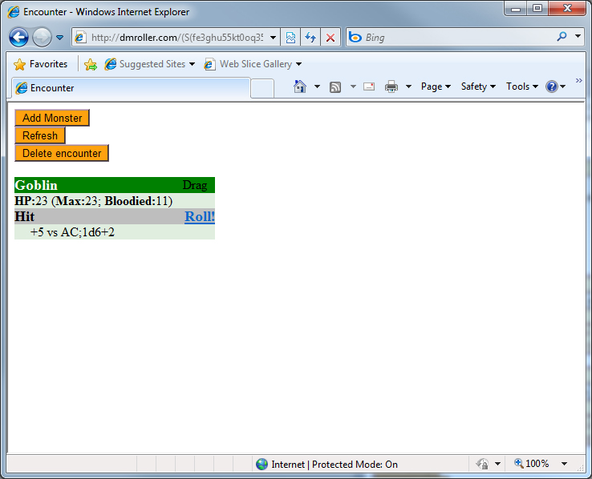
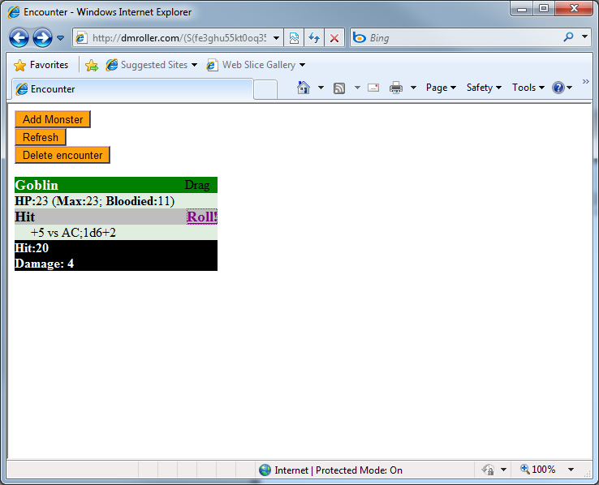

Waddyp ya'll
Daddy 'g lil' e here to tell u bout how u can use the D to the M R.
Aight so lisn up.

Above you can see an image of what the DMR alpha interface looks like. There are 3 buttons, their functions are explained below.
- 1: This button brings up the window interface where the user inputs data about new monsters to add to the encounter.
- 2: This button refreshes the window.
- 3: This button deletes fucking everything. That means it deletes all the monsters, effectively resetting the encounter.

The above picture is of the "Add Monster" interface. There are many input fields, and their functions are explained below.
- 1: This is where name of the monster goes. Its primary function is to let the user easily identify the different monsters they have added to the encounter.
- 2: Type. If you play D&D4.0 you'll know what this is, if not, don't bother with it.
Once you have selected a type, the HP and AP field will adjust accordingly.
- 3: The amount of hitpoints the monster has. If type is set to "minion", this is forced to 1.
- 4: The amount of Action Points the monster has. This is not yet an adjustable value, and is decided by the monster's type as per D&D4.0 rules.
- 5: The Ability field. Within it are the following:
The name of the ability, used to tell a monster's abilities apart.
The +hit bonus the ability has (entered without the '+') and what the attack is against (AC, Reflex, Fortitude or Will).
The damage the ability does. Entered as "3d8+1d4+18" (for example).
Additional info about the ability. Fluff text, conditions etc.
- 6: Adds a new ability field in order for the user to add additional abilities.
- 7: Submits the data and adds the monster to the encounter (assuming the input is legal)

Above is a filled out form for a "Goblin", named Goblin.

Above is what the encounter will look like if "Goblin" is added to it.
Goblin can be dragged around by clicking and dragging the "drag" text.
Clicking "Roll!" will roll the dice for Goblin's "Hit" ability.

Above is a picture of what it'll look like if you roll Goblin's "Hit" ability.
Mousing over the "Hit: x" and "Damage: x"-text will show you what value each die had.